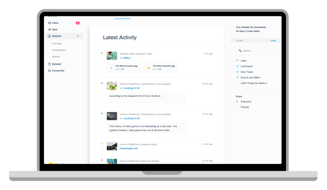

<section class="fastest-way">
  <div class="fastest-way__wrapper">
    <div class="fastest-way__content">
      <div class="fastest-way__title">
        <h2>Fastest way to organize</h2>
        <p>
          Most calendars are designed for teams. Slate is designed for
          freelancers
        </p>
      </div>
      <button class="primary-btn">Try for free</button>
    </div>
    <div class="fastest-way__image">
      
    </div>
  </div>
</section>
